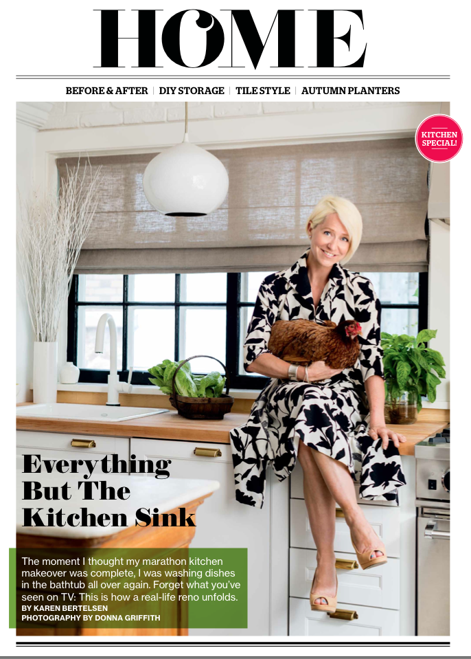

<!DOCTYPE html PUBLIC "-//W3C//DTD XHTML 1.0 Transitional//EN" "http://www.w3.org/TR/xhtml1/DTD/xhtml1-transitional.dtd">

<html xmlns="http://www.w3.org/1999/xhtml">

	<head>
		<meta http-equiv="content-type" content="text/html;charset=utf-8" />
		<meta name="generator" content="Adobe GoLive" />
		<title>Rough Linen in Canadian Living
---	

	<body>
		<div align="center">
			<div style="position:relative;width:946px;height:1061px;-adbe-g:p;">
				<div style="position:absolute;top:48px;left:128px;width:686px;height:959px;">
					</div>
				<div style="position:absolute;top:0px;left:0px;width:944px;height:17px;-adbe-c:c">
					<font size="2" face="Verdana, Arial, Helvetica, sans-serif">Here's lovely Karen from The Art of Doing Stuff &#8212; the roman blinds are, of course, my natural Orkney Rough Linen</font></div>
			</div>
		</div>
		<p></p>
	</body>

</html>